Esta é a Tatá
Uma tatu-bolinha de casco azul que adora brincar, cantar e descobrir o mundo. Ela fala com a criança em português, com voz fininha, e guia cada brincadeira: mostra onde tocar, comemora cada descoberta e, quando o tempo de brincar acaba, vai dormir.
Um quintal cheio de brincadeiras
Mais de 80 brincadeiras em 15 cantinhos. Alvos grandes, nada para ler e tudo responde ao toque, do jeito que uma criança pequena brinca.
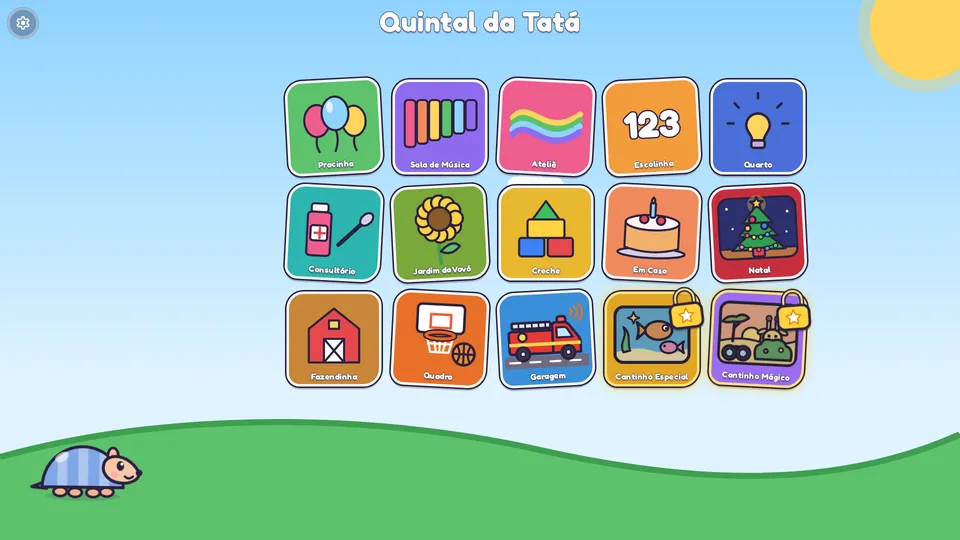
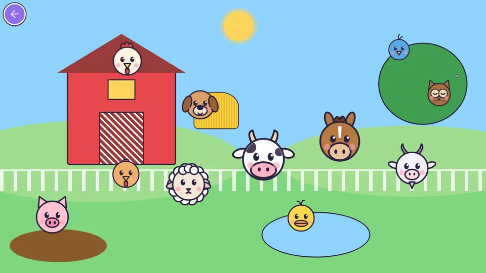
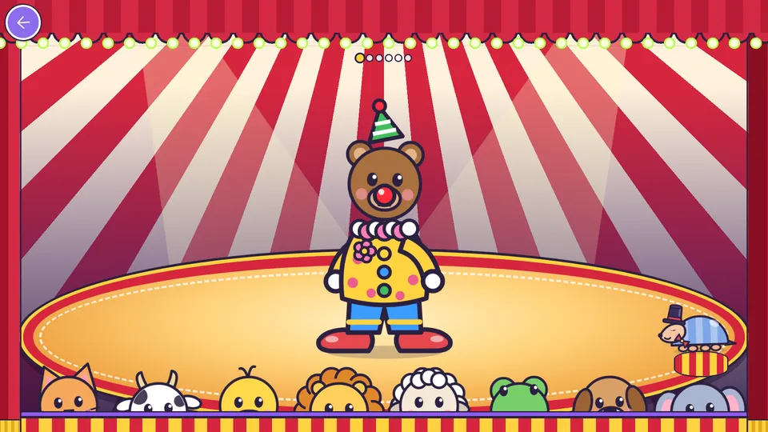
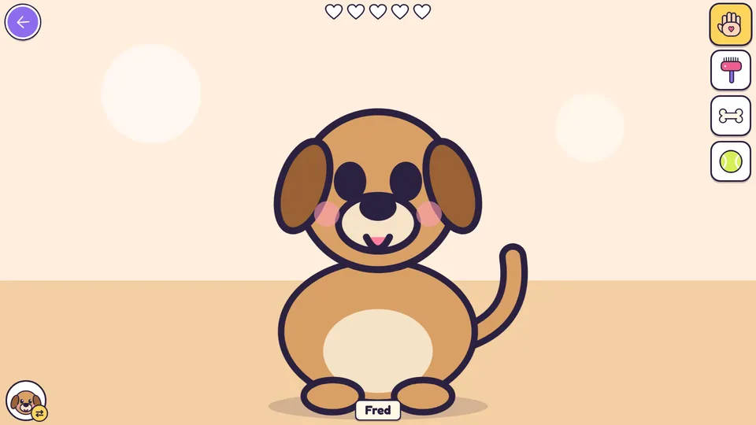
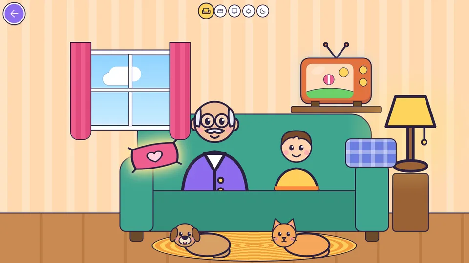
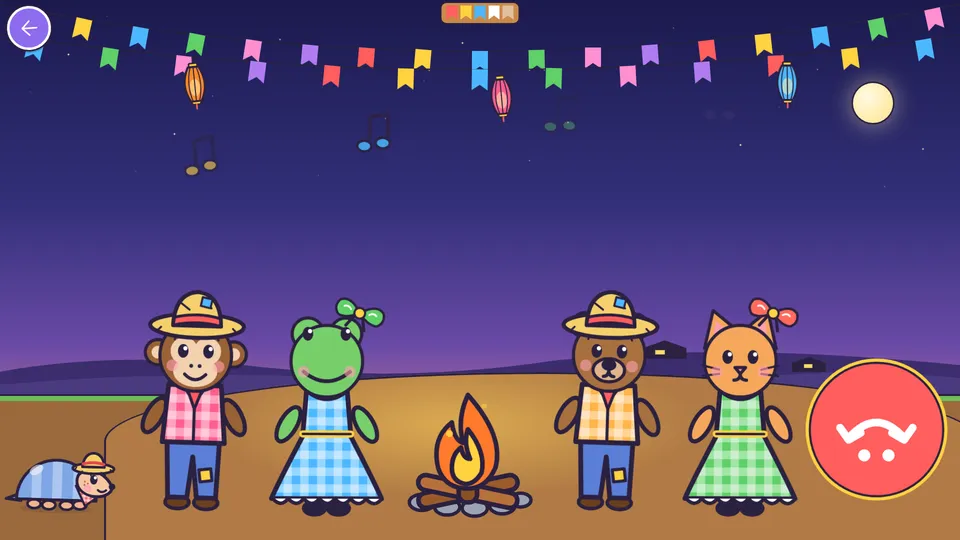
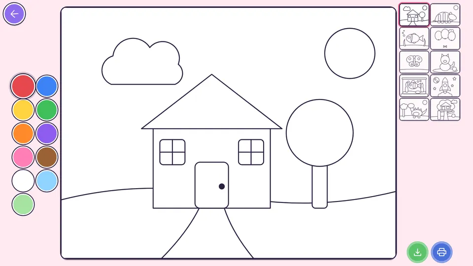
- Fazendinha
- Em Casa
- Creche
- Pracinha
- Escolinha
- Sala de Música
- Ateliê
- Jardim da Vovó
- Quadra
- Garagem
- Quarto
- Consultório
- Natal
- Cantinho Especial
- Cantinho Mágico
O que tem de especial
A família dentro do jogo
Cadastre a foto da criança, da mamãe e do papai: eles aparecem nas brincadeiras, no esconde-esconde, no ABC pela inicial do nome e na hora de buscar na creche. Dá até para gravar a sua voz.
O quintal muda com as festas
No Carnaval, Páscoa, São João, Dia das Crianças, Halloween e Natal o quintal ganha cores e enfeites, e a Tatá se fantasia.
Música, cores, números e letras
Bandinha dos bichos, dança da estátua, cores, formas, números até 10 e o ABC, sempre em forma de brincadeira, sem prova e sem erro que assuste.
Tempo de brincadeira
Os pais escolhem quanto tempo por dia. Quando acaba, a Tatá vai dormir, e só um adulto libera mais.
Modo calmo
Sons mais suaves e ritmo mais lento, para brincar antes de dormir. E tem historinha narrada pela Tatá.
Relatório para os pais
Quanto a criança brincou, do que mais gosta e o que cada brincadeira trabalha (no Premium).
Grátis, e compras únicas, sem assinatura
Baixe e brinque. Se a família gostar, uma compra única libera mais, para sempre.
Grátis
- Mais de 60 brincadeiras
- 20 minutos de brincadeira por dia
- Anúncios para crianças entre uma brincadeira e outra
Quintal Completo
- Sem nenhum anúncio
- Vocês escolhem o tempo de brincadeira, ou sem limite
Quintal Premium
- Tudo do Completo
- 20 brincadeiras de faz de conta: pizzaria, sorveteria, foguete, circo, praia, safári e mais
- Tema do quintal à escolha o ano todo
- Relatório da criança
- Fotos de toda a família: avós, irmãos, professoras e os bichinhos
Já tem o Completo? O Premium sai pela diferença, ninguém paga duas vezes. As compras ficam na Área dos Pais, atrás de um portão que só adulto abre.
Desenhos da Tatá e seus amigos
A Tatá e a turma do quintal (o coelhinho Pipo, a sapinha Bolota, o cachorrinho Totó, a passarinha Lili e a Vovó Coruja) em desenhos animados e vídeos curtinhos para aprender cores, números, formas, letras e bichos. Todos marcados como conteúdo para crianças.
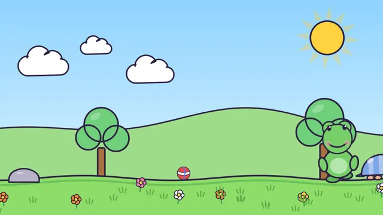
O Mapa do Tesouro · ep. 1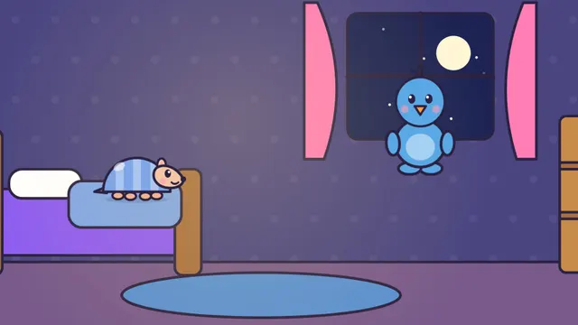
Sonho nas Nuvens · ep. 2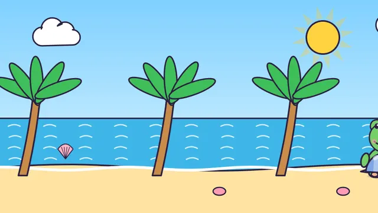
Aventura no Fundo do Mar · ep. 3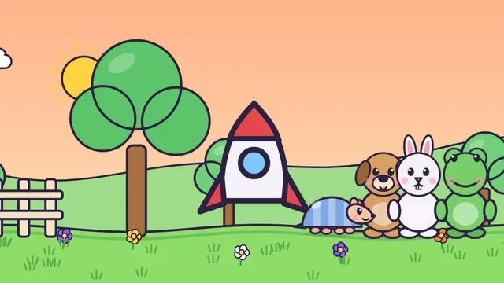
Viagem à Lua · ep. 4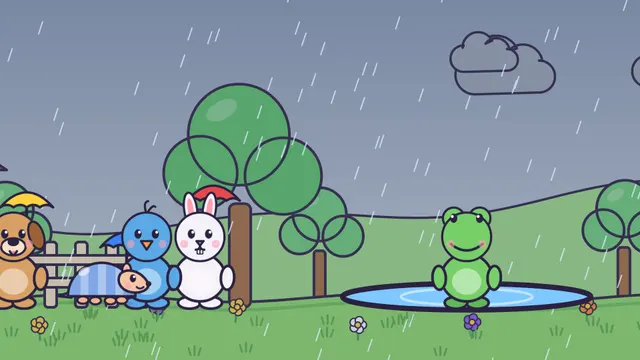
Dia de Chuva · ep. 5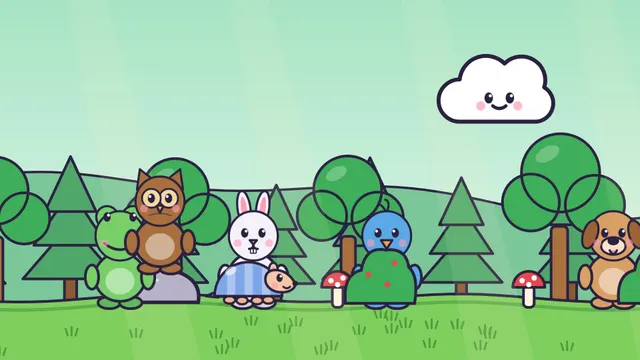
Esconde-Esconde na Floresta · ep. 6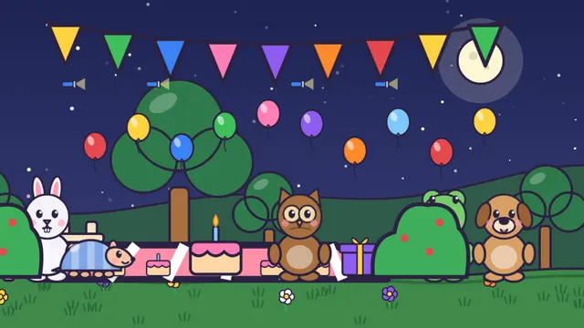
Festa Surpresa da Vovó Coruja · ep. 7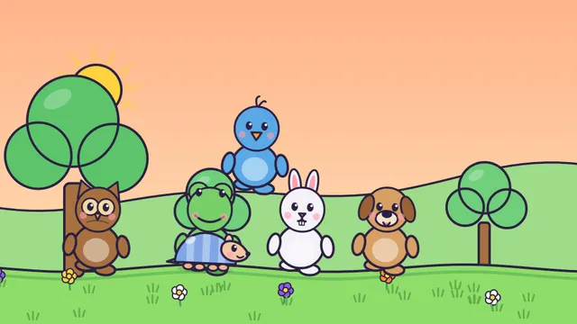
Hora de Dormir · ep. 8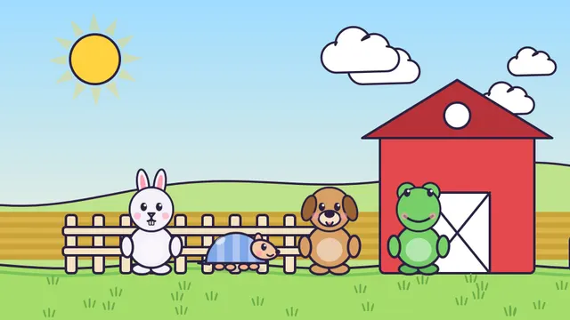
Um Dia na Fazendinha · ep. 9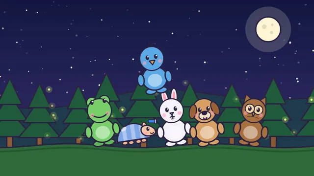
Acampamento das Estrelas · ep. 10
Vídeos curtinhos para aprender
Feito para vocês ficarem tranquilos
O Quintal da Tatá foi pensado para crianças pequenas brincarem com um adulto por perto.
- Sem conta, sem login, sem cadastro. Abriu, brincou.
- Fotos, vozes e histórico ficam só no aparelho. Não temos servidor e nada disso é enviado.
- Funciona sem internet, no carro, na viagem, na sala de espera.
- Portão para adultos na Área dos Pais, nas compras e em qualquer link para fora do app.
- Anúncios só na versão grátis, classificados para crianças e sem personalização. Uma compra única tira todos.
- Nada de prova, nota ou erro que assuste. Cada toque vira descoberta.
Detalhes em Política de Privacidade.
Perguntas frequentes
Para qual idade é o app?
Para crianças de 1 a 5 anos. As brincadeiras não pedem leitura: a Tatá fala, mostra onde tocar e comemora cada acerto.
Precisa de internet?
Não para brincar. Na versão grátis os anúncios só aparecem quando o aparelho está conectado.
Tem para iPhone?
Por enquanto, só para Android, pelo Google Play.
Como entro na Área dos Pais?
Na tela inicial, toque e segure a engrenagem no canto por dois segundos e responda a continha. É o portão que mantém compras e ajustes longe dos dedinhos.
É assinatura?
Não. O Quintal Completo e o Quintal Premium são compras únicas, para sempre. Quem já tem o Completo paga só a diferença para o Premium.
Comprei e a compra não apareceu. E agora?
Abra a Área dos Pais → Loja → Restaurar compras, com a mesma conta Google usada na compra. Se ainda assim não aparecer, escreva para nós.
Como apago as fotos e as vozes da família?
Na Área dos Pais você pode editar ou apagar tudo a qualquer momento. Ao desinstalar o app, esses dados são apagados junto, já que nunca saíram do aparelho.
Tenho uma sugestão de brincadeira!
Adoramos ouvir as famílias. Escreva para appquintaldatata@gmail.com.
Dúvidas, sugestões ou problemas com uma compra: appquintaldatata@gmail.com.